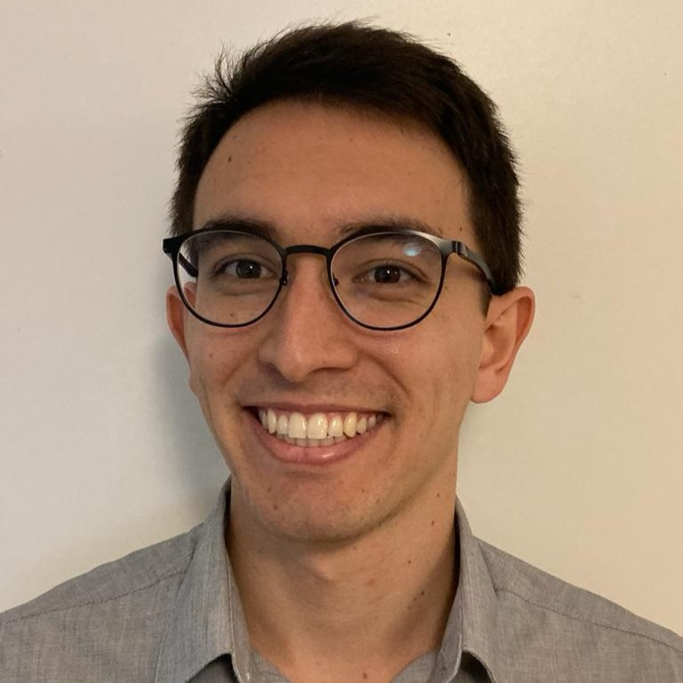
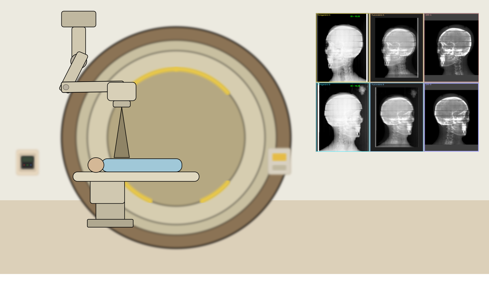
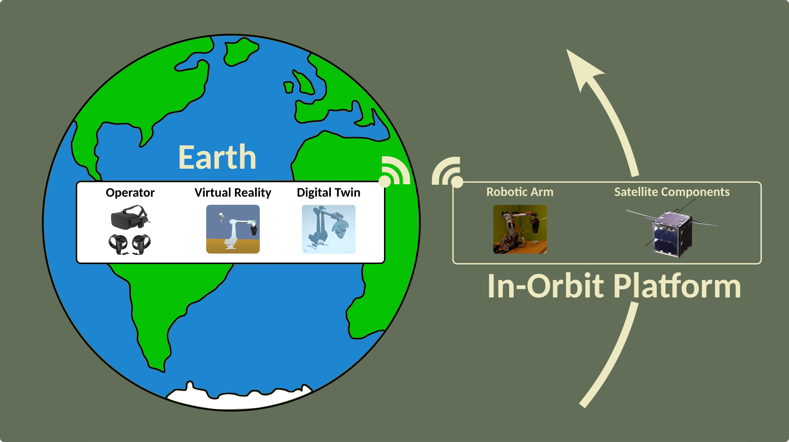

C/C++ | Flutter/Dart | 2D/3D Computer Vision
N12 Tactics (Solo Developer) | 2023 - present
AI-powered cross-platform application for video analysis in sports. Computer vision pipeline for object detction, scene analysis and segmentation and rendering.
N12 Tactics (Solo Developer) | 2023 - present
Interactive cross-platform application for tactical planning and presentation in sports. Animations and tactical presentations with high-quality rendering.
KIT/IIIT (Researcher) | 2021 - 2023
Automated inspection and geometric reconstruction of mechanical parts for remanufacturing. Multi-sensor pipeline with robot arm, 3D camera and laser scanner.

MedCom GmbH (Software Developer) | 2020 - 2021
Patient positioning for proton therapy using multi-modal image registration (X-ray, CT, MRI). Hardware interface development for X-ray generators. GPU-accelerated processing.

Master Thesis | TU Darmstadt | 2019
Virtual reality, digital twin and robot arm pipeline for assembling spacecraft components in orbit. Inferface between TinkerForge, Siemens NX and Unity3D.